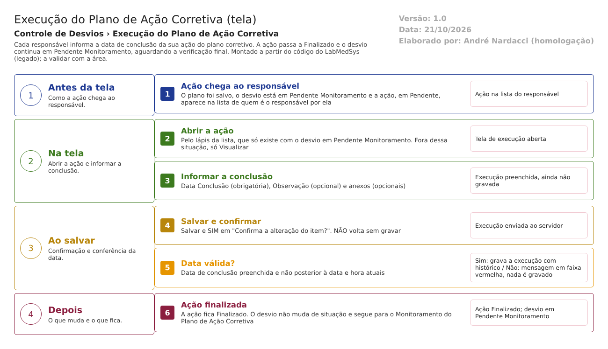

Fluxograma no arquivo 08-execucao-do-plano-de-acao-corretiva.fluxo.json, em 4 fases. Etapas, na mesma ordem do arquivo:
- Etapa 1. Ação chega ao responsável: o plano foi salvo; o desvio está em Pendente Monitoramento e a ação, em Pendente, aparece na lista do responsável (Antes da tela).
- Etapa 2. Abrir a ação: pelo lápis da lista, que só existe com o desvio em Pendente Monitoramento; fora dela, Visualizar (Na tela).
- Etapa 3. Informar a conclusão: Data Conclusão e, se quiser, Observação e anexos (Na tela).
- Etapa 4. Salvar e confirmar: Salvar e SIM em "Confirma a alteração do item?". NÃO volta sem gravar (Ao salvar).
- Etapa 5. Data válida? (decisão): obrigatória e não posterior a agora. Sim: grava a execução e finaliza a ação. Não: mensagem em faixa vermelha e nada é gravado (Ao salvar).
- Etapa 6. Ação finalizada: a ação fica Finalizado, o desvio continua em Pendente Monitoramento e segue para o Monitoramento do Plano de Ação Corretiva (Depois).
Saídas alternativas: Voltar sai sem gravar; a única recusa é a data; não há cancelamento.
Situações e histórico
Situações
- Entrada: desvio em Pendente Monitoramento do Plano Ação Corretiva, com plano salvo e ação do usuário em Pendente (AvaliacaoPlanoAcaoCorretivaRNCController.cs:104; GerenciadorAcessoTelaAvaliacaoPlanoAcaoCorretivaIndex.cs:23-26).
- Saída da ação: Finalizado (TipoSituacao.Concluido, que a tela mostra como "Finalizado"; AvaliacaoPlanoAcaoCorretivaRNCController.cs:266; TipoSituacao.cs:19-20).
- Situação do desvio: não muda (AvaliacaoPlanoAcaoCorretivaRNCController.cs:241-242 só atualiza usuário e data de atualização).
- Não há recusa de situação nem cancelamento nesta tela; a única recusa é a validação da data.
O que grava na trilha de auditoria (histórico)
- Primeira execução: inclusão da avaliação, com histórico (AvaliacaoPlanoAcaoCorretivaRNCController.cs:294).
- Execuções seguintes: alteração da avaliação, com histórico campo a campo (:301).
- Registro manual de troca de situação da ação, "Situacao", de Pendente para Concluido, ligado à avaliação, com o usuário e a data do servidor (:304-326).
- Alteração do desvio, da ação e dos anexos, pela gravação com histórico (:326; RepositoryBase.cs:100-102 e 272-390; inclusão de anexo em :424).
O que não grava
- Justificativa: não é pedida nem gravada, nem ao reexecutar uma ação já finalizada (AvaliacaoPlanoAcaoCorretivaRNCController.cs:271, 319 e 326).
- O registro manual de troca de situação só é feito quando a situação muda (:304); reexecutar não gera esse registro, só o histórico campo a campo da avaliação.
- Impressão e visualização: sem registro (:350-379 e 439-500).
- Evidência da execução: não há campo de evidência obrigatória; só a data e a observação opcional.
Dados
Tabelas do banco
| Tabela | Colunas principais | Chaves e ligações | Fonte |
|---|---|---|---|
| TBL_ACAO_CORRETIVA | Descricao, IdResponsavel, NomeResponsavel, DataPrazo, Situacao, LIXEIRA | Chave ID_ACAO_CORRETIVA; PlanoAcaoCorretivaRNC_Id liga ao plano; AvaliacaoPlanoAcaoCorretivaRNC_Id liga à execução | TBL_ACAO_CORRETIVA.sql:2-23 |
| TBL_AVALIACAO_PLANO_ACAO_CORRETIVA_RNC | DataConclusao, Observacao, Justificativa, DataAvaliacao, IdResponsavelAvaliacao, NomeResponsavelAvaliacao, Situacao | Chave ID_AVALIACAO_PLANO_ACAO_CORRETIVA_RNC | TBL_AVALIACAO_PLANO_ACAO_CORRETIVA_RNC.sql:2-9 e 18 |
| TBL_REGISTRO_RNC | Situacao, DATA_ALTERACAO, ID_USUARIO_ALTERACAO | Lida para achar o plano e as ações; só usuário e data de atualização são alterados | TBL_REGISTRO_RNC.sql:7 e 26; AvaliacaoPlanoAcaoCorretivaRNCController.cs:241-242 |
| TBL_PLANO_ACAO_CORRETIVA_RNC | Dados do plano | Lida (ações do plano) | TBL_PLANO_ACAO_CORRETIVA_RNC.sql:2-9 |
| TBL_ANEXO | DESCRICAO, ARQUIVO, TAMANHO, CHAVEDIRETORIO, TIPOCONTEUDO, LIXEIRA | RegistroNaoConformidade_Id (anexo ligado ao desvio); a coluna AvaliacaoPlanoAcaoCorretivaRNC_Id existe, mas o código não a usa | TBL_ANEXO.sql:17-18; AvaliacaoPlanoAcaoCorretivaRNCController.cs:412-425 |
Leituras e gravações em outros módulos
| Módulo | O que é lido ou gravado | Meio | Fonte |
|---|---|---|---|
| Principal | Lista de usuários para o filtro Responsável | UsuarioService.ListarUsuarios | AvaliacaoPlanoAcaoCorretivaRNCController.cs:62-70 |
| Principal | Divisão do usuário (por ação listada, na regra do ícone Editar) | API Area/GetObterAreaPorUsuario (AreaService.ObterAreaPorUsuario) | GerenciadorAcessoTelaAvaliacaoPlanoAcaoCorretivaIndex.cs:18-19; AreaService.cs:54-61 |
| Principal | Nome do responsável do desvio (carregado e não mostrado) e nome da divisão do usuário conectado | ObterUsuarioServiceHub; API Area/GetAreaName | AvaliacaoPlanoAcaoCorretivaRNCController.cs:176-178; GQControllerBase.cs:58-77 |
| Principal | Etiqueta (TAG) do equipamento e responsáveis das áreas, só na impressão | EquipamentoService; AreaService (ServiceBloco2) | ServiceBloco2.cs:16-71; AvaliacaoPlanoAcaoCorretivaRNCController.cs:361-365 |
| Produção e Estoque | Nada é lido ou gravado por esta tela | Não se aplica | Sem fonte (nenhuma chamada no controlador) |